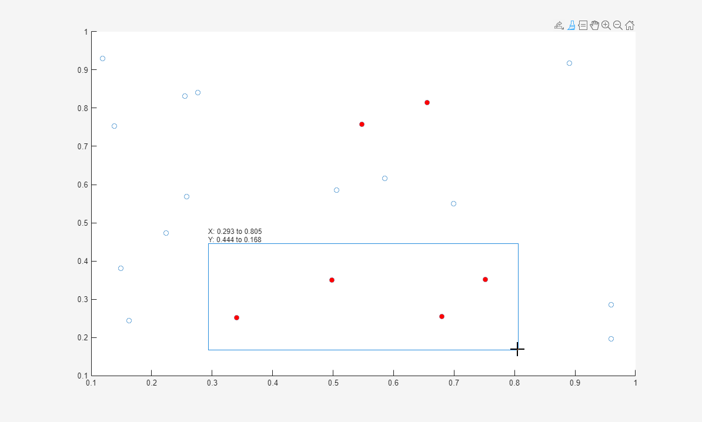
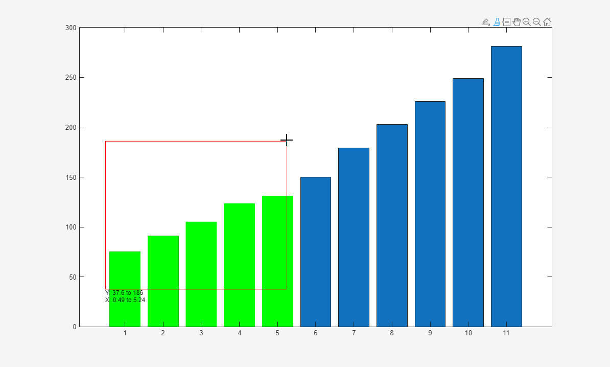
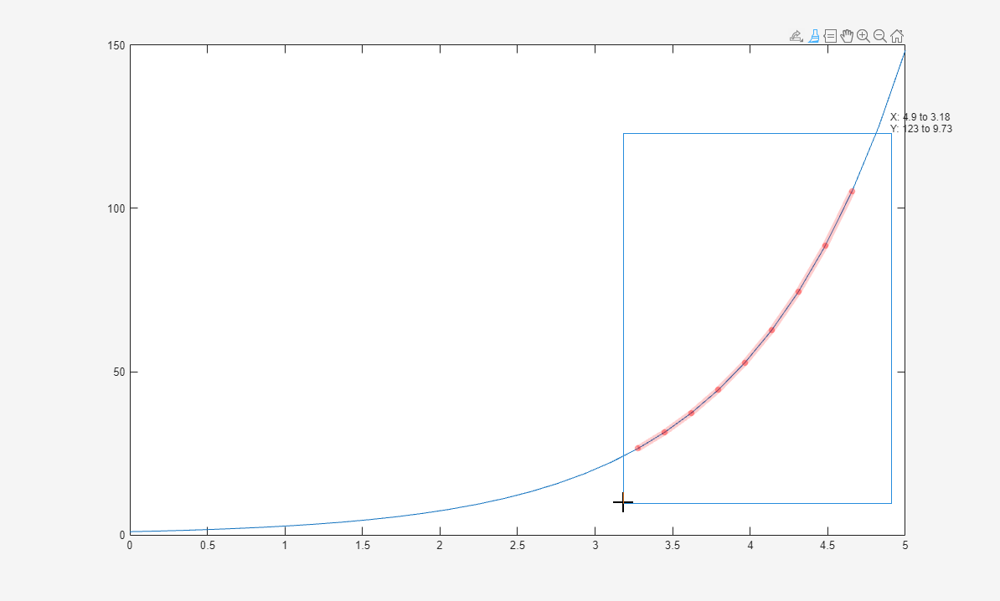
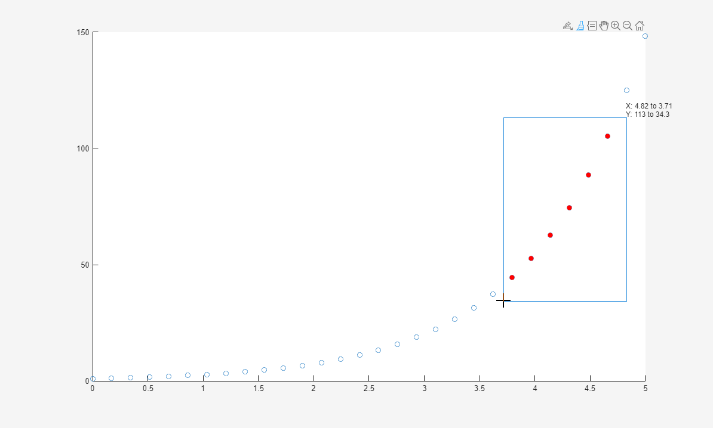
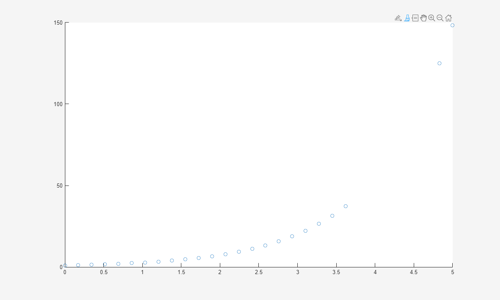

brush
Interactively mark data values in a chart
Description
Data brushing allows you to mark data values in a chart using a color of your choice. You can mark individual data values, or select many values to mark using a selection rectangle. Once you have values marked, you can delete them or save them to a variable in the workspace. Brush marks will persist until you remove them, even if you pan, zoom, add data tips, or edit the plot.
Most charts support data brushing, including line, bar, area, histogram, and surface
charts. Charts that support brushing typically display the brush  icon in the axes toolbar.
icon in the axes toolbar.
Creation
Description
brush on turns on brushing in the current figure. With brushing
on, mark a single data value by clicking on it. Mark multiple data values by dragging a
selection rectangle around them. To add additional marks or remove unwanted marks, hold
the Shift key while brushing the values.
brush off turns off brushing. If there are existing brush marks
on the chart, this command will not remove them.
brush toggles the brush mode between on and
off.
brush( sets the color for subsequent
brush marks. Setting the brush color does not affect current marks unless you brush
data, change the brush color, and then add or remove marks using the
Shift key. In this case, all marks update to the new color.color)
brush( sets the brush
mode for all axes in the specified figure for any of the previous syntaxes. Specify the
additional argument as fig,___)'on', 'off', or a brush
mark color. For example, to enable brush mode for all axes in the figure
fig, use brush(fig,'on'). To set the brush mark
color for all of the axes, use brush(fig,'green').
brush( sets the brush mode
for the specified axes. For example, to enable brush mode for the axes
ax,___)ax, use brush(ax,'on'). To set the brush mark
color for the axes, use brush(ax,'green'). (since R2023a)
Before R2025a: Use this syntax with apps created in App
Designer or using the uifigure function.
Input Arguments
Brush mark color, specified as an RGB triplet or a color name. To create brush marks of a certain color, set the color property before brushing your data values. Setting the brush color does not affect current marks unless you brush data, change the brush color, and then add or remove marks using the Shift key. In this case, all marks update to the new color.
An RGB triplet is a three-element row vector
whose elements specify the intensities of the red, green, and blue components of the
color. The intensities must be in the range [0,1]; for example,
[0.4 0.6 0.7]. Alternatively, you can specify some common colors
by name. This table lists the long and short color name options and their equivalent
RGB triplet values.
| Color Name | Short Name | RGB Triplet | Appearance |
|---|---|---|---|
'red' | 'r' | [1 0 0] |
|
'green' | 'g' | [0 1 0] |
|
'blue' | 'b' | [0 0 1] |
|
'cyan'
| 'c' | [0 1 1] |
|
'magenta' | 'm' | [1 0 1] |
|
'yellow' | 'y' | [1 1 0] |
|
'black' | 'k' | [0 0 0] |
|
'white' | 'w' | [1 1 1] |
|
Here are the RGB triplets for the default colors MATLAB® uses in many types of plots.
| RGB Triplet | Appearance |
|---|---|
[0 0.4470 0.7410] |
|
[0.8500 0.3250 0.0980] |
|
[0.9290 0.6940 0.1250] |
|
[0.4940 0.1840 0.5560] |
|
[0.4660 0.6740 0.1880] |
|
[0.3010 0.7450 0.9330] |
|
[0.6350 0.0780 0.1840] |
|
Target figure, specified as a Figure object. Specifying a target
figure sets the mode for all current or future Axes children.
Target axes, specified as an Axes object.
Properties
Note
If you modify any of these properties of a brush object, then
MATLAB enables legacy exploration modes on the figure. For more information, see
enableLegacyExplorationModes.
Brush mark color, specified as an RGB triplet, a hexadecimal color code, a color name, or a short name. To create brush marks of a certain color, set the color property before brushing your data values. Setting the brush color does not affect current marks unless you brush data, change the brush color, and then add or remove marks using the Shift key. In this case, all marks update to the new color.
For a custom color, specify an RGB triplet or a hexadecimal color code.
An RGB triplet is a three-element row vector whose elements specify the intensities of the red, green, and blue components of the color. The intensities must be in the range
[0,1], for example,[0.4 0.6 0.7].A hexadecimal color code is a string scalar or character vector that starts with a hash symbol (
#) followed by three or six hexadecimal digits, which can range from0toF. The values are not case sensitive. Therefore, the color codes"#FF8800","#ff8800","#F80", and"#f80"are equivalent.
Alternatively, you can specify some common colors by name. This table lists the named color options, the equivalent RGB triplets, and the hexadecimal color codes.
| Color Name | Short Name | RGB Triplet | Hexadecimal Color Code | Appearance |
|---|---|---|---|---|
"red" | "r" | [1 0 0] | "#FF0000" |
|
"green" | "g" | [0 1 0] | "#00FF00" |
|
"blue" | "b" | [0 0 1] | "#0000FF" |
|
"cyan"
| "c" | [0 1 1] | "#00FFFF" |
|
"magenta" | "m" | [1 0 1] | "#FF00FF" |
|
"yellow" | "y" | [1 1 0] | "#FFFF00" |
|
"black" | "k" | [0 0 0] | "#000000" |
|
"white" | "w" | [1 1 1] | "#FFFFFF" |
|
"none" | Not applicable | Not applicable | Not applicable | No color |
This table lists the default color palettes for plots in the light and dark themes.
| Palette | Palette Colors |
|---|---|
Before R2025a: Most plots use these colors by default. |
|
|
|
You can get the RGB triplets and hexadecimal color codes for these palettes using the orderedcolors and rgb2hex functions. For example, get the RGB triplets for the "gem" palette and convert them to hexadecimal color codes.
RGB = orderedcolors("gem");
H = rgb2hex(RGB);Before R2023b: Get the RGB triplets using RGB =
get(groot,"FactoryAxesColorOrder").
Before R2024a: Get the hexadecimal color codes using H =
compose("#%02X%02X%02X",round(RGB*255)).
Brush mode state, specified as 'on' or 'off',
or as numeric or logical 1 (true) or
0 (false). A value of 'on' is
equivalent to true, and 'off' is equivalent to
false. Thus, you can use the value of this property as a logical
value. The value is stored as an on/off logical value of type OnOffSwitchState.
Function to execute before brushing, specified as one of these values:
Function handle
Cell array containing a function handle and additional arguments
Character vector that is a valid MATLAB command or function, which is evaluated in the base workspace (not recommended)
Use this property to execute code as you start brushing a graph. If you specify this property using a function handle, then MATLAB passes two arguments to the callback function when executing the callback:
figure— Figure object you are brushing.axesStruct— Structure that contains the axes you are brushing. This structure has one field,Axes, the axes object you are brushing. If you do not use this argument in your callback function, then replace it with the tilde character (~).
For more information about how to use function handles to define callback definitions, see Create Callbacks for Graphics Objects.
Function to execute after brushing, specified as one of these values:
Function handle
Cell array containing a function handle and additional arguments
Character vector that is a valid MATLAB command or function, which is evaluated in the base workspace (not recommended)
Use this property to execute code after you finish brushing a graph. If you specify this property using a function handle, then MATLAB passes two arguments to the callback function when executing the callback:
figure— Figure object you are brushing.axesStruct— Structure that contains the axes you are brushing. This structure has one field,Axes, the axes object you are brushing. If you do not use this argument in your callback function, then replace it with the tilde character (~).
For more information about how to use function handles to define callback definitions, see Create Callbacks for Graphics Objects.
Brush suppression callback, specified as one of these values:
Function handle
Cell array containing a function handle and additional arguments
Character vector that is a valid MATLAB command or function, which is evaluated in the base workspace (not recommended)
Use this property to suppress brushing under conditions that you define. A numeric
or logical output of 1 (true) suppresses the brush action, and a
numeric or logical output of 0 (false) allows the brush action to
proceed. If you specify this property using a function handle, then MATLAB passes two arguments to the callback function when executing the
callback:
axes— The axes object you are brushing.eventData— Empty argument. Replace it with the tilde character (~) in the function definition to indicate that this argument is not used.
If you specify this property using a function handle, then you must assign the function's output to a variable.
For more information about how to use function handles to define callback definitions, see Create Callbacks for Graphics Objects.
This property is read-only.
Figure object in which brush marks appear.
Legacy mode, specified as "on" or "off", or as
numeric or logical 1 (true) or
0 (false). A value of "on" is
equivalent to true, and "off" is equivalent to
false. Thus, you can use the value of this property as a logical
value. The value is stored as an on/off logical value of type matlab.lang.OnOffSwitchState. For more information, see Legacy Exploration Modes.
Once this property is set to "on", you cannot change it back to
"off".
Before R2025a: This property applies only to
brush objects for figures created using the
uifigure function or in MATLAB
Online™. Setting this property to "on" changes the behavior of
interaction modes in UI figures so they match the behavior of modes in traditional
figures. For more information, see enableLegacyExplorationModes.
Examples
Use brushing to mark data values in a scatter plot. First, plot random
x and y values. Then, turn on brushing and use
the mouse to drag a rectangle around some points.
x = rand(20,1);
y = rand(20,1);
scatter(x,y)
brush('on')

To modify which points you have marked without discarding the entire set, hold down the Shift key while brushing. Add or remove a single point by clicking on it. Add or remove several points by dragging a selection rectangle.

Clear all brush marks by clicking or dragging in an empty area of the axes.
Plot data values in a bar chart and create a brush object. Then, enable brushing and
set the brush color to 'green' by updating the object's properties.
Finally, mark data values by including the maximum value of each bar in the selection
rectangle.
y = [75 91 105 123.5 131 150 179 203 226 249 281.5]; bar(y) b = brush; b.Enable = 'on'; b.Color = 'green';

Save brushed data in a variable by using the context menu. First, plot some
x and y values. Turn on brushing, and then mark
some data values.
x = linspace(0,5,30);
y = exp(x);
plot(x,y)
brush('on')

To store the brushed data in a variable, right-click on a brushed data value and
select Export Brushed... from the context menu. When prompted, enter the variable name. In this
case, use the name bData. Finally, view the contents of
bData.
bData
bData =
3.2759 26.4660
3.4483 31.4461
3.6207 37.3633
3.7931 44.3940
3.9655 52.7475
4.1379 62.6730
4.3103 74.4662
4.4828 88.4784
4.6552 105.1273
Remove brushed data from a chart by using the context menu. First, plot some
x and y values. Turn on brushing, and then mark
some data values.
x = linspace(0,5,30);
y = exp(x);
scatter(x,y)
brush('on')

To remove the brushed data from the chart, right-click on a brushed data value and select Remove Brushed from the context menu.

More About
Tips
To brush a histogram chart, you must first turn on data linking.
Alternative Functionality
Axes Toolbar
For some charts, enable brush mode by clicking the brush  icon in the axes toolbar.
icon in the axes toolbar.